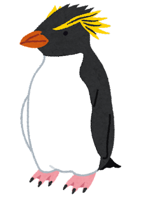
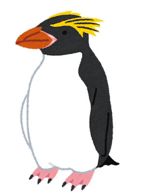

近危物種，簡稱NT
保護現狀比較低，但可能在不久的將來有瀕危或滅絕等危險。IUCN需常對此範圍內的物種級別進行重新評估，以確保其危險狀況。適用於近危分類的理由通常包括已經或即將滿足的物種脆弱標準。

皇帝企鵝(學名: Aptenodytes forsteri)
保護狀況: NT (近危)
分布及棲息地: 南極大陸
介紹:
身高約100 ~ 120公分，體重約22 ~ 45公斤，頸部為淡黃色，耳朵的羽毛為鮮黃橘色，背部及鰭狀肢則是黑色，鳥喙的下方則呈鮮橘色。
食性:
皇帝企鵝主要以甲殼類動物為食，偶爾也捕食小魚和頭足類動物。
威脅:
皇帝企鵝被國際自然保護聯盟列為近危物種，在19世紀末20世紀初，為了獲取皇帝企鵝身上的油脂，曾有大量帝企鵝遭到人類屠殺，其數量不斷下減，到20世紀20年代前後，由於受公眾輿論強烈譴責，這種野蠻的屠殺才被迫停止。至1964年南極條約協商國制訂《保護南極動植物區系議定措施》之後，企鵝及其他許多南極物種已受到普遍的保護。
而在地球暖化和氣候變遷的情況下，造成南極海冰消失及破裂，讓皇帝企鵝的生存也面臨威脅。

皇家企鵝(學名: Eudyptes schlegeli)
保護狀況: NT (近危)
分布及棲息地: 接近南極的麥覺理島與鄰近島嶼上
介紹:
身高約65 ~ 76公分，體重約3 ~ 8公斤，面部臉頰和喉嚨呈白色的，背側和冠頂為黑色，腹側為白色。
食性:
皇家企鵝主要以磷蝦和魚類為食，牠們在少數的情況也會捕食魷魚。
威脅:
皇家企鵝被國際自然保護聯盟列為近危物種，在過去，牠們曾因身上所產出的油脂而被大量獵殺。而現在，則是因為氣候變化及人類過度和非法捕撈造成食物缺乏，讓企鵝處於受威脅的情況。

峽灣企鵝，又稱作毛利企鵝(學名: Eudyptes pachyrhynchus)
保護狀況: NT (近危)
分布及棲息地: 紐西蘭南島的海岸和斯圖爾特島(Stewart Island)
介紹:
身高約50 ~ 60公分，體重約2 ~ 5.9公斤，頭頂擁有黃色的鳳冠，臉部、背部、手部和尾巴的毛色呈現黑色或藍灰色，腹部毛色則是白色，臉頰兩側平均會各有3～6條白色紋路。
食性:
峽灣企鵝主要食物是頭足類，其次是甲殼類動物和魚類
威脅:
峽灣企鵝被國際自然保護聯盟列為近危物種，因受到貓、狗、老鼠以及白鼬等動物的威脅，數量仍持續下降中。峽灣企鵝身性膽小對人類超級敏感，如果有人靠近它們，通常它們都會直接離開，繼而造成企鵝寶寶受到掠食者的攻擊。